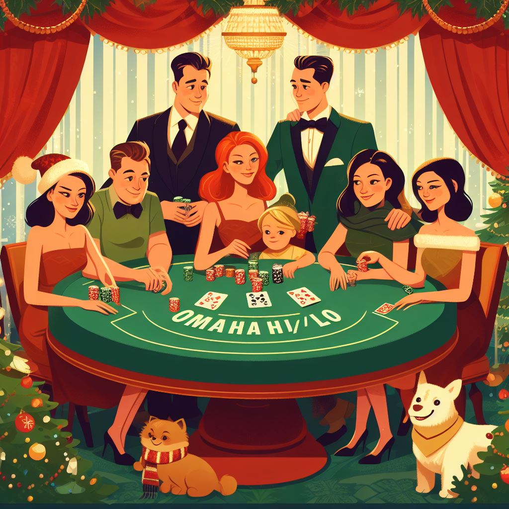

twoplustwo.com - Forum Статьи Frank Jerome Flops I - reprint from September 2012 Flops II - reprint from October 2012 Flops III - reprint from November 2012 Flops IV - reprint from December 2012 101 - Omaha-8 Blind Defense 101 Daniel Wolcott PLO8 Tournament Article I - PLO8 Tournament Article II - PLO8 Tournament Article III - PokerStrategy PLO8 Strategy I - PLO8 Strategy II - PLO8 Strategy III - 